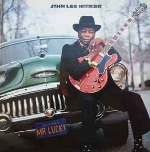

John Lee Hooker was an American blues musician who lived from 1912 to 2001. He was famous for his distinctive electric guitar playing and powerful singing.
His music was influenced by Delta Blues, one of the earliest styles of blues music. This style began in the Mississippi Delta region of the United States and inspired many later blues and rock musicians.
The Mississippi Delta is often called the birthplace of the blues. Many famous musicians, including Muddy Waters, Robert Johnson and B.B. King, came from this area. Their music helped shape the development of blues and popular music around the world.